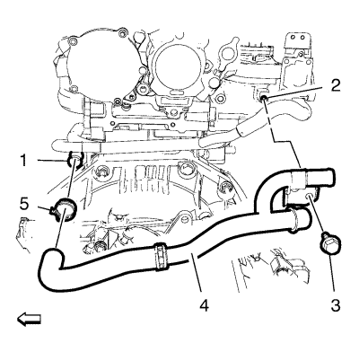
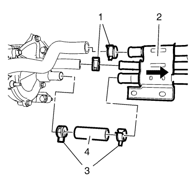
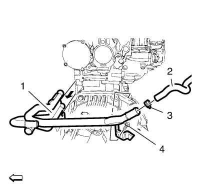

Retire la abrazadera del tubo flexible delantero de salida del depósito de expansión (1) y el tubo flexible delantero de salida del depósito de expansión (2) del tubo de salida del depósito de expansión (5).
Retire el clip del tubo flexible de salida del calefactor (3) y el tubo flexible de salida del calefactor (4) del tubo de salida del depósito de expansión (5).

Retire la abrazadera del tubo flexible trasero de salida del depósito de expansión (5).
Retire el tornillo del soporte del tubo de salida del depósito de expansión (3) del colector de admisión (2).
Retire el tubo flexible trasero del salida del depósito de expansión con el tubo de salida del depósito de expansión (4) del tubo de derivación del termostato (1).
Retire la abrazadera del tubo flexible de salida del radiador de aceite del motor (2) y el tubo flexible de salida del radiador de aceite del motor (3) del tubo de derivación del termostato (1).
Retire los 2 tornillos del tubo de derivación del termostato (1) del soporte del tubo de derivación del termostato (2).

Retire la abrazadera del tubo flexible de entrada de la bomba de agua y la abrazadera del tubo flexible de derivación del termostato (1) de los tubos de derivación del termostato.
Afloje la abrazadera del tubo flexible de entrada del refrigerante del motor del tubo de derivación del termostato y mueva los tubos de derivación del termostato y el soporte del tubo de derivación del termostato (2) hacia un lado (consulte la flecha).

Retire la abrazadera del tubo flexible de retorno de refrigeración del colector de recirculación de gases de escape (3) y el tubo flexible de retorno de refrigeración del colector de recirculación de gases de escape (2) del tubo de derivación del termostato (1).
Retire el tornillo del soporte del tubo de derivación del termostato (4) y el tubo de derivación del termostato (1) en la dirección que indica la flecha.
Coloque el tubo de derivación del termostato (1) en el motor y monte el tornillo del soporte del tubo de derivación del termostato (4). Apriete el tornillo a 10 N·m (89 lib. pulg.).
Monte la abrazadera del tubo flexible de retorno de refrigeración del colector de recirculación de gases de escape (3) con el tubo flexible de retorno de refrigeración del colector de recirculación de gases de escape (2) en el tubo de derivación del termostato (1).
Coloque los tubos de derivación del termostato con el soporte del tubo de derivación del termostato (2) en el tubo flexible de derivación del termostato y el tubo flexible de entrada de refrigerante del motor (4).
Monte la abrazadera del tubo flexible de entrada de refrigerante del motor (3) en el tubo de derivación del termostato (2).
Monte la abrazadera del tubo flexible de derivación del termostato y la abrazadera del tubo flexible de entrada de la bomba de agua (1).
Monte los 2 tornillos del tubo de derivación del termostato (1) en el soporte del tubo de derivación del termostato (2) y apriételos a 22 N·m (16 lib. pie).
Monte la abrazadera del tubo flexible de salida del radiador de aceite del motor (2) con el tubo flexible de salida del radiador de aceite del motor (3) en el tubo de derivación del termostato (1).
Monte el tubo flexible trasero de salida del depósito de expansión con el tubo de salida del depósito de expansión (4) en el tubo de derivación del termostato (1) e instale la abrazadera del tubo flexible trasero de salida del depósito de expansión (5).
Monte el tornillo de soporte del tubo de salida del depósito de expansión (3) en el colector de admisión (2) y apriételo a 9 N·m (80 lib. pulg.).
Monte el tubo flexible de salida del calefactor (4) en el tubo de salida del depósito de expansión (5) e instale el clip del tubo flexible de salida del calefactor (3).
Monte la abrazadera del tubo flexible delantero de salida del depósito de expansión (1) con el tubo flexible delantero de salida del depósito de expansión (2) en el tubo de salida del depósito de expansión (5).